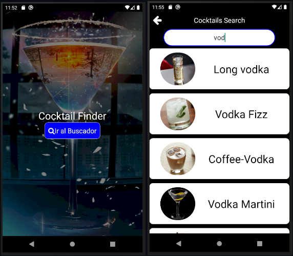

La aplicación fue desarrollada en Reac-native, cumple la función de conectarse a una API y permitir la
busqueda de una gran variedad de tragos, permitiendo la busqueda.

Portfolio Argentina Programa 2022
El porfolio que se esta visualizando, es de desarrollo propio.